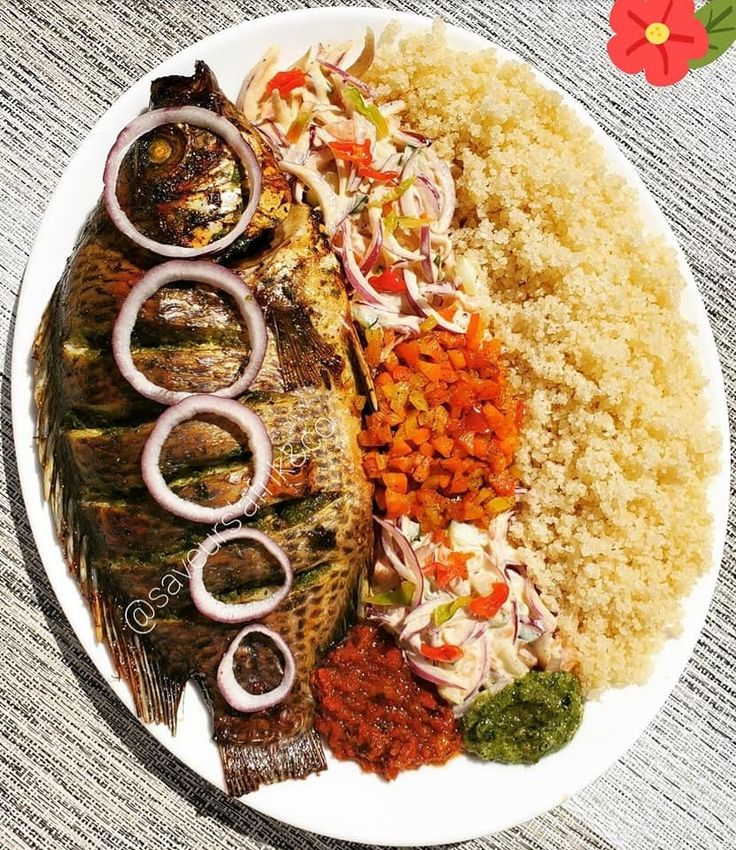

Atti√©k√© (C√¥te d'Ivoire) ‚Äì Semoule de manioc servie avec du poisson, du poulet ou de la viande üçΩ
Ingrédients :
- 1 kg de poisson (tilapia, carpe ou autre)
- 500 g d'Attiéké
- 2 à 3 oignons hachés
- 2 tomates coupées en dés
- 2 cuillères à soupe de concentré de tomate
- 1 poivron vert coupé en dés
- 1 à 2 piments (facultatif)
- 2 à 3 cuillères à soupe d'huile
- 1 cube de bouillon
- 1 cuillère à soupe de gingembre râpé
- Sel et poivre au goût
Instructions :
- Nettoyer et mariner le poisson.
- Faire revenir les oignons, tomates et poivron.
- Cuire l'Attiéké à la vapeur.
- Frire le poisson et mélanger avec la sauce.
- Servir l'Attiéké avec le poisson et sa sauce.